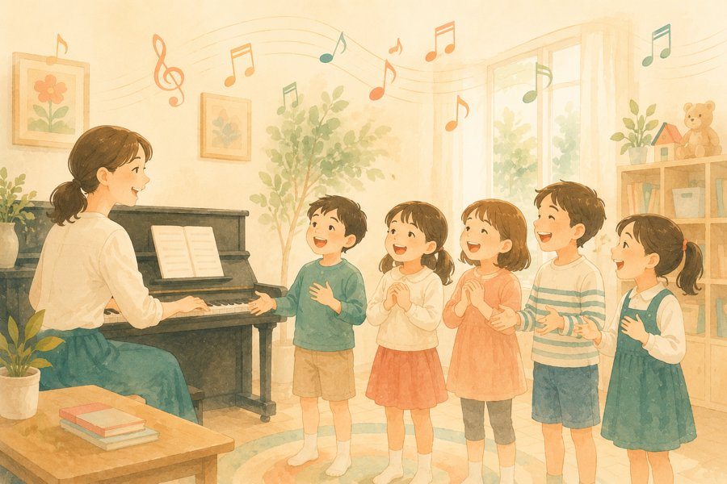
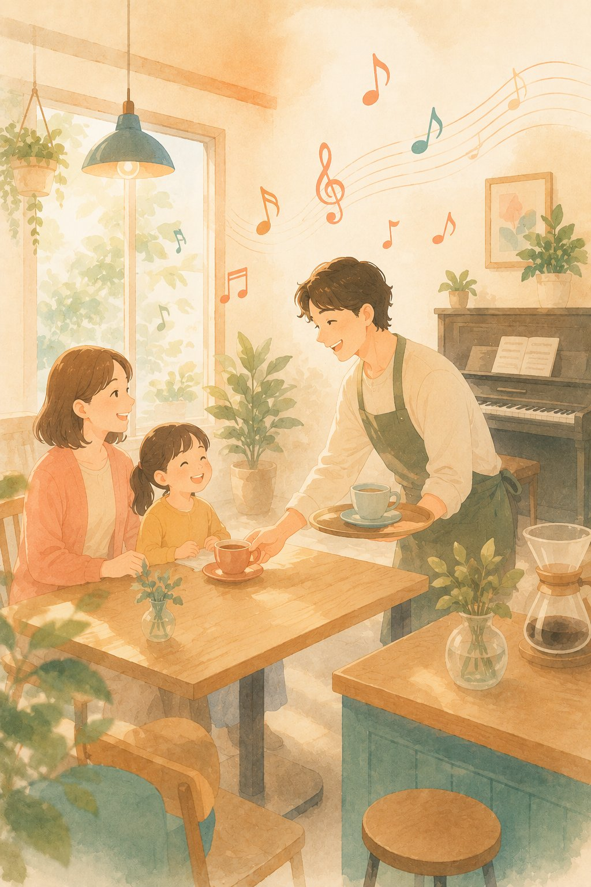
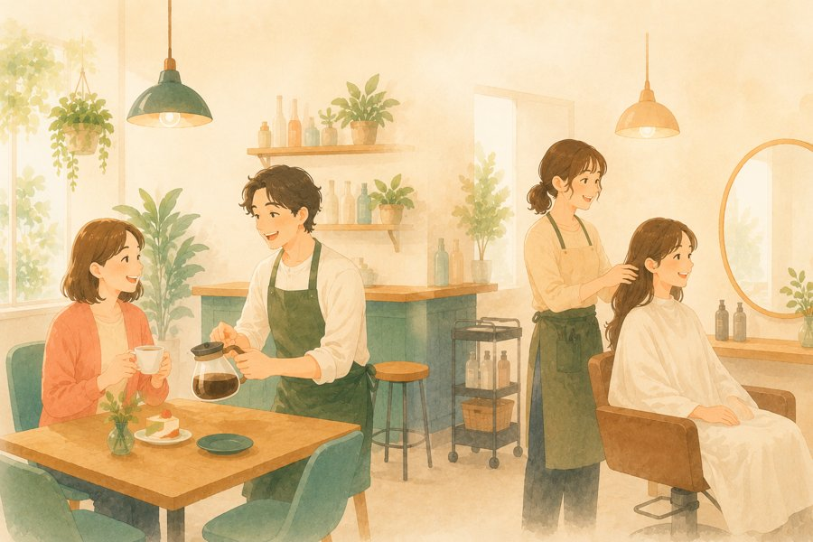
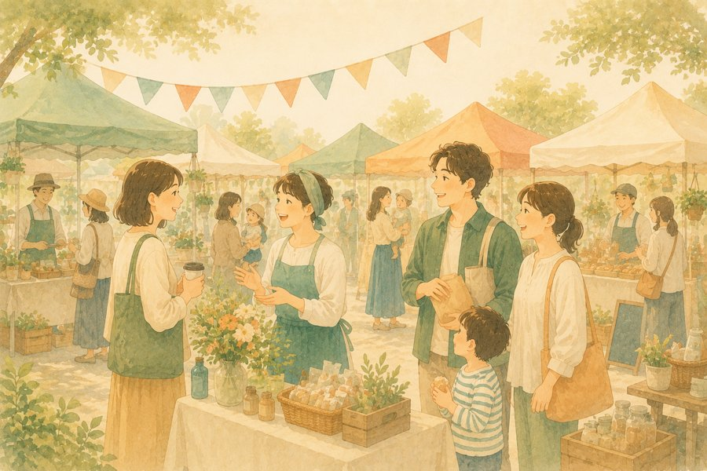
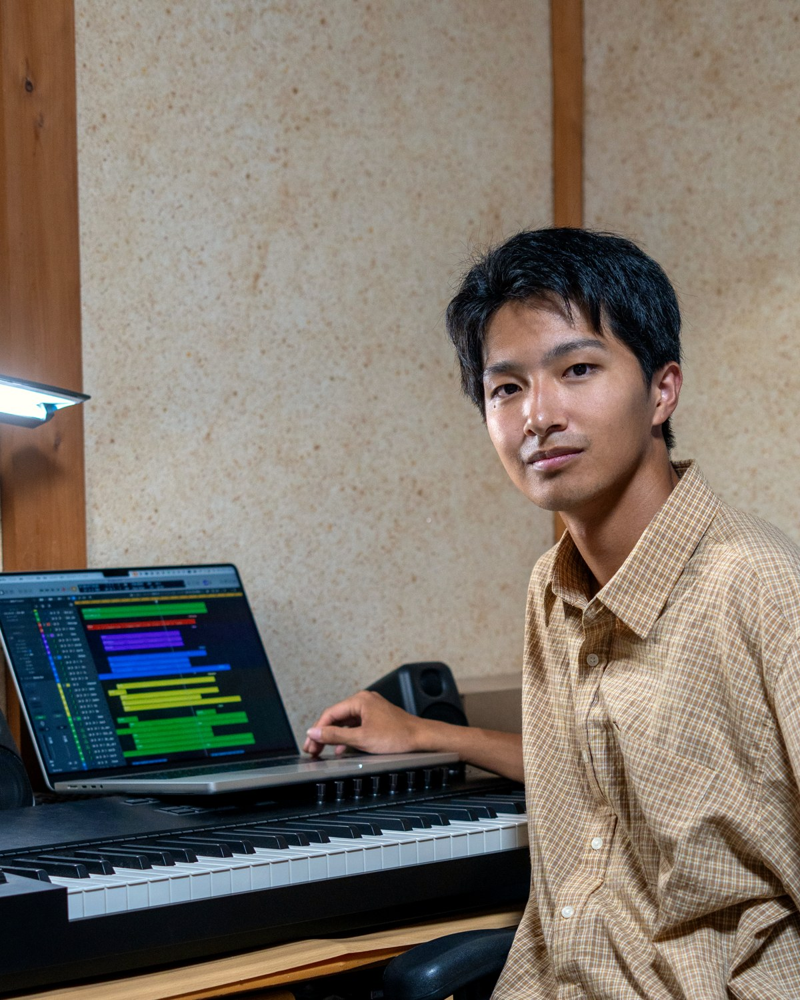

子ども教室
音楽・ダンス・体操・学習塾など
- 子どもが覚えて家でも歌う＝ご家族にも届く
- 保護者や生徒の印象に残る
- 発表会・紹介動画にも活用できる
Soulound は、子ども教室・サロン・飲食店などの想いを丁寧にヒアリングし、あなたのブランドにぴったりのオリジナルテーマ曲やサウンドロゴを制作します。日常の中で自然と耳に残り、何度でも思い出してもらえる音楽を。
LINE 無料相談・資料を受け取る →
印象的なメロディが、お店・教室の名前や雰囲気を自然と思い出させます。
コンセプトや想いを音楽に込めて、共感を生み、ファンとのつながりを深めます。
店内BGM・動画・SNS・広告など、幅広い用途でご利用いただけます。
投稿のたびに音が流れる ＝ CMと同じ反復
この繰り返しが、自然な「思い出し」をつくります
米国の大規模調査では、ブランド名を含むオリジナルのサウンドロゴは、含まないものに比べて、実際に名前を思い出してもらえる割合が5%→46%、約9倍に跳ね上がることが分かっています。
お店や教室の名前がメロディと一緒に記憶されれば、「またあそこに行こう」「友だちに教えよう」の瞬間に、真っ先に思い出してもらえます。



♪ 業種や規模を問わず、あなたの想いを“音”にして、ファンを増やします。
お店や教室の想いやイメージを丁寧にお伺いします。
ヒアリング内容をもとに、オリジナル楽曲を制作します。
楽曲データを納品。すぐにお店やSNSで使えます。
修正は2回まで無料対応。納得いくまでサポートします！

店舗・教室・企業の“想い”を音にする作曲家。企業ソングや舞台・映像音楽の作編曲、録音ディレクションなど、ジャンルを横断して活動。丁寧なヒアリングで、その場所の“らしさ”が伝わる、記憶に残るメロディづくりを大切にしています。
LINE登録特典：サービス資料＆楽曲サンプル集をプレゼント！